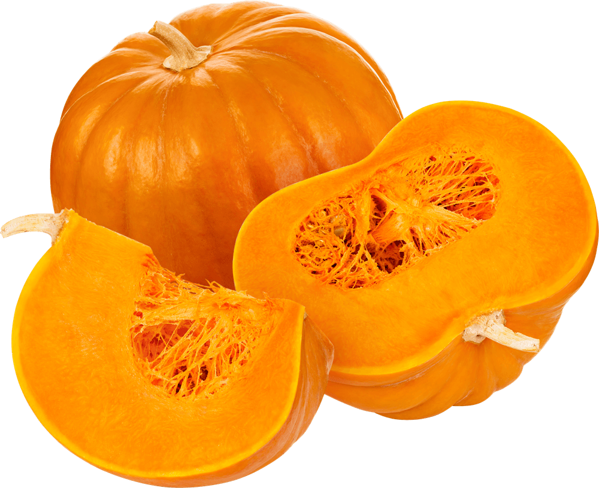
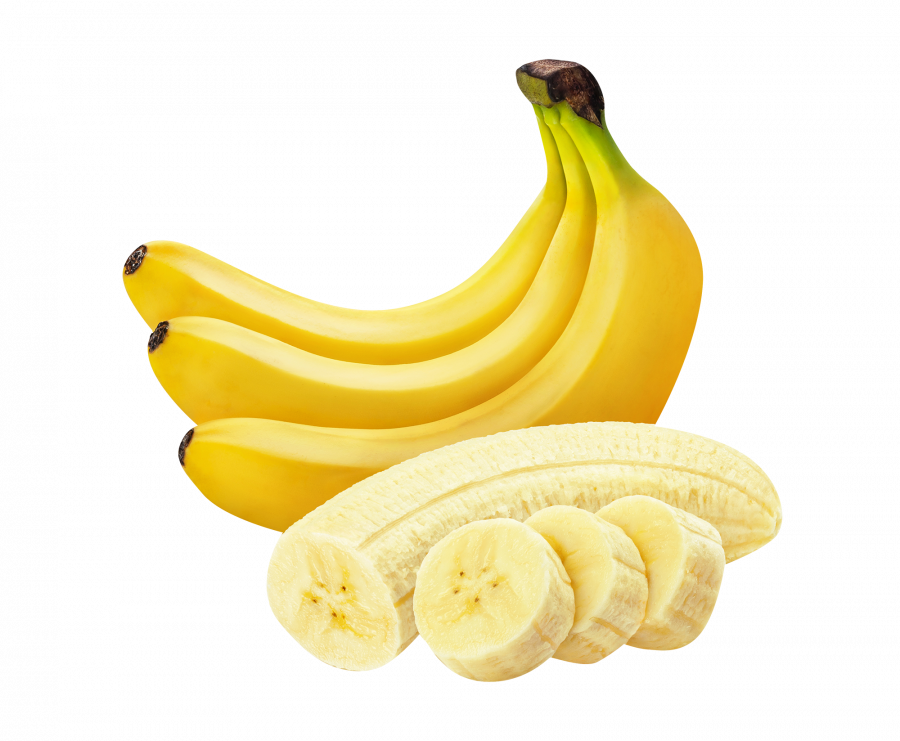

Польза овощей и фруктов
 Овощи и фрукты уникальны по своему составу. Это источник пищевых волокон, которые улучшают моторику кишечника, нормализуют состояние кишечной микрофлоры. Это источник ценных витаминов: С, фолиевой кислоты, биофлавоноидов и минералов – калия, натрия, магния, йода, селена, марганца, магния, цинка. Овощи и фрукты содержат большое количество природных антиоксидантов – веществ, препятствующих раннему старению, развитию раковых заболеваний, укрепляющих здоровье сердечно-сосудистой и нервной систем. В «антираковую тарелку» можно включить лук, чеснок, капусту, косточковые фрукты – их потребление снижает риск развития онкологии.